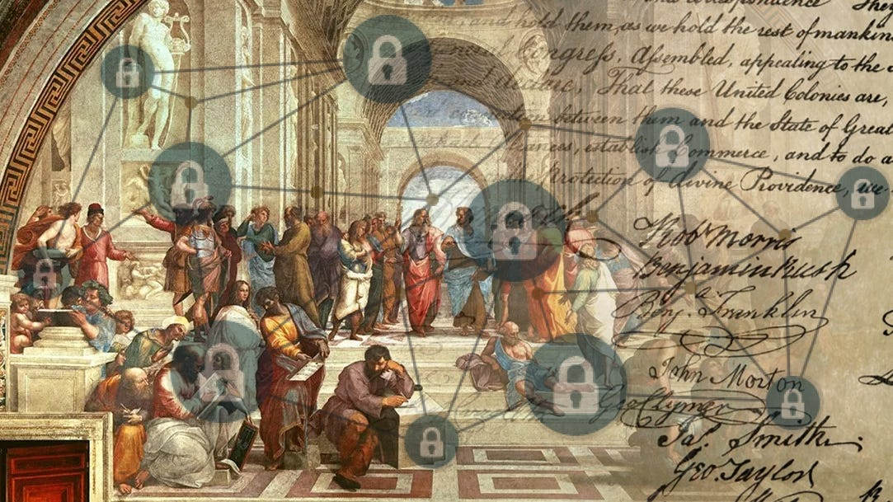

The Future of Democracy is Direct, Exercised through Open Source Software Running on a Blockchain
Rethinking Democracy

Back Story
Simply put, the modern term “democracy” refers to a system of government where the power of the state lies with its people, who govern indirectly through elected representatives.
—
To put it even more simply, citizens vote every few years to elect politicians who will manage the government on their behalf, until the next election.
—
By “managing the government,” we refer to organizing and directing the state’s resources, laws, and policies to (ideally) serve its people.
—
Elected representatives set priorities and policies, such as taxes, tariffs, and public programs. They allocate resources, like funding for the military or infrastructure, and work with lawmakers to create and enforce laws.
—
This system has its roots in the early democratic experiments of ancient Greece. However, most of the ideas shaping modern democracy are somewhat recent, dating back about 250 years to the Enlightenment era and the age of revolutions, including the American and French Revolutions.
—
The United States is considered one of the earliest modern democracies. Its democratic foundations began with the establishment of representative governance, the House of Burgesses, in Jamestown, Virginia, in 1619.
—
These ideas were solidified with the drafting of the U.S. Constitution in 1787, which created a constitutional system of government (i.e., a government based on written rules everyone agrees to follow).
—
It introduced principles like the separation of powers, a system of checks and balances, and a framework for protecting individual rights through amendments like the Bill of Rights.
—
That is in contrast to previous ways of governing, such as monarchies or feudal systems, where power was concentrated in the hands of a king, queen, or a small elite.
—
In those systems, ordinary citizens had little to no say in decision-making processes, and leadership was often hereditary. Modern democracy, by empowering the populace and institutionalizing rights and freedoms, represented a radical shift towards inclusivity and accountability in governance.
—
Technology and technological revolutions have consistently driven major shifts in governance.
—
The Gunpowder Revolution of the 14th century ended feudalism, as centralized monarchies, armed with professional standing armies, eclipsed the power of feudal lords.
—
The Printing Press in the 15th century spread ideas in local languages, fostering national identities and laying the groundwork for nation-states.
—
Advances in navigation and shipbuilding during the Age of Exploration enabled the European colonial empires of the 15th–19th centuries.
—
The Industrial Revolution reshaped societies by driving urbanization and creating the modern working and middle classes. Concentrated in cities, these groups organized to demand better conditions, fair wages, and political representation.
—
The emergence of the working middle classes not only challenged traditional power structures but also shaped the political and economic thinking that defined the 20th century - driving movements for democracy, labor rights, and social reforms that continue to influence governance today.

“We hold these truths to be self-evident, that all men are created equal, that they are endowed by their Creator with certain unalienable Rights, that among these are Life, Liberty and the pursuit of Happiness.--That to secure these rights, Governments are instituted among Men, deriving their just powers from the consent of the governed, --That whenever any Form of Government becomes destructive of these ends, it is the Right of the People to alter or to abolish it, and to institute new Government, laying its foundation on such principles and organizing its powers in such form, as to them shall seem most likely to effect their Safety and Happiness.” From Declaration of Independence, July 4, 1776
In between the past and the future
Although 250 years may not seem like a long time ago, the world was vastly different from today. At that time, the majority of the population worked in agriculture, a labor-intensive occupation that consumed most of their working hours. Communication relied on postal systems—there was no internet, telephone, or anything remotely similar—so access to information was slow and limited. Transportation was also extremely slow, with trains only beginning to emerge.
—
It is important to note this, because the democratic system created by the Founding Fathers of the United States—remarkable as it was—was designed for a world vastly different from ours, shaped and constrained by the tools, knowledge, and ways of thinking available at the time.
—
As we mentioned already - at its core, modern democracy is founded on the simple principle that “the power of the state lies with its people, and representatives govern on their behalf” (whether this always holds true is a topic for later debate).
—
This principle defines what we call an “indirect democracy,” where citizens do not govern directly but instead elect representatives to make decisions and manage the government on their behalf.
—
This principle, rather than being a defining feature of democracy, was more of a necessity born out of the technological and logistical constraints of the time.
—
Direct democracy—where citizens themselves vote on laws and policies—was simply impractical in a world where communication was slow, transportation was limited, and populations were dispersed over vast areas.
—
You could imagine the challenges: how would a nation of farmers and laborers, most of whom were tied to demanding daily work, come together to deliberate and vote on every issue? How would decisions be communicated effectively across such distances without the tools we take for granted today, like the internet or even telephones?
—
Representatives became the solution, not because it was an inherently superior system, but because it was the only feasible one.
”Democracy is the worst form of government – except for all the others that have been tried” — Churchill.
Issues
Democracy, with all its merit, is not perfect. It’s a living system that must adapt to the new challenges of the age. Especially in the face of yet another big technological shift - AI.
—
For one, the age-old problems of corruption and bad incentives still plague democratic institutions. While it’s difficult to bribe an entire population of millions, power often concentrates in the hands of a few decision-makers, making systems susceptible to manipulation. Influential interest groups, bureaucrats, and lobbyists - leaving ordinary citizens sidelined.
—
Our world has shifted from the 20th-century industrial era to the digital and information era of the 21st century, with AI accelerating this shift even further. Yet, most of our institutions were created for and shaped by the industrial era. The changes brought by our modern era demand a complete rethink of policies around education, labor, and innovation. But traditional, slow-moving governance structures struggle to keep up with rapid innovation.
—
Some changes need to happen now, not in a few months or years.
—
People and human nature are more rounded than modern democratic system allow them to be. They can agree on certain issues with one party or politician, and on a different issue, with another.
—
There will be issues people would care a lot about, as it affects their life directly - while those same issues won’t matter at all to others.
—
The four-year term in most modern governmental elections is an arbitrary number that may have acted as a feature to guard against the concentration of power, yet it has also had the unintended consequence of incentivizing short-term thinking, and populism.
—
We need more responsive and transparent governance. Indirect democracy, while serviceable in the past, will almost certainly fail to capture the true will of the people.
—
Hence, the proposed direct democracy (exercised through Open Source Software, which we will get to shortly)
—
Direct democracy, as the name suggests, occurs when citizens vote directly on governance matters. It is a form of government that is practiced today, but in limited ways. For example, Switzerland held several referendum in 2024, and the United Kingdom held one for Brexit. However, these remain relatively isolated instances of direct democracy.
—
Impracticality Critics
Critics of direct democracy argue it’s “impractical.” They claim everyday people can’t or won’t engage with every policy. Personally, I find that these old arguments often reflect elitism—assuming citizens can’t be trusted to govern themselves. It is as if they support “the nanny state”. A way of thinking that completely contradicts the ideals of the Founding Fathers of the United States, and the democratic innovation.
—
Today, with instant connectivity - and more importantly, with AI - tech reshape what’s possible.
—
With AI, complex legislation can be broken down into plain language or even short bullet points. If the state is operating using code (more about it shortly), then participating, with AI become accessible to all.
“We reject: kings, presidents, and voting. We believe in: rough consensus and running code” - David Clark, MIT researcher and internet pioneer
Three Building Blocks of the Future
Software:
Big part of our world is already run by software and automated algorithms. From our financial systems, households (keys, cars), our most used communication tools, to the way we learn, etc.
The reason our world is running on software, is because it is efficient and flexible. It allows fast iteration, and a scalable way of value creation. That’s why we saw a lot of innovation in “the world of bits” compared to the “world of atoms” as Peter Thiel like to say.
—
Open source software:
Open source software is a subset of software that refers to a program that its code is publicly shared and available online for people to see, run, and modify themselves.
Most of software is mediated to consumers through the internet, which mostly runs on open source software (Linux, Android).
In its technological context alone - the open source movement was one of the biggest saviors of the enlightenment ideas in recent decades. Enabling individuals freedoms, especially the freedom of speech, at times when it could have been restricted more easily.
It is the reason you can freely open a web browser and surf almost any website you desire, without paying or asking for permission.
However, this was not the only way the digital revolution could have played out. In fact, many companies (including Microsoft, AOL, etc.) tried to fight it.
Sadly, since the iPhone’s AppStore was released on July 10, 2008, the open internet has been at risk.
Big tech companies, like Apple and Facebook, have gradually taken over what made the internet open and permissionless, with their closed-garden products and gatekeeping. But that is a topic for a different essay.
—
Blockchain:
Blockchain is often described as a “decentralized database,” which essentially means we can record, store, and verify data without relying on a single authority, and without worrying about someone tampering with the data.
That database is spread across a network of computers (nodes) rather than a single server, using cryptographic links that make tampering nearly impossible. Any attempt to alter a past record—such as changing a vote—would break these links, instantly exposing fraud.
Storing data on a blockchain also implies storing code, meaning it can run programs.
Blockchains can execute self-enforcing code (smart contracts), which automatically enforces rules—for instance, releasing funds only if a proposal gains enough votes—eliminating the need for a central authority.
That offers a new way to make collective decisions—like votes or resource allocations.
By anchoring governance processes in a secure, decentralized ledger, we can move closer to the democratic ideals of transparency, fairness, and accountability.
The Future
Combining the four building blocks—direct democracy, software, open source, and blockchain—the world I envision is as follows:
Most of our institutions’ decision-making processes can be digitized and implemented as software running on a blockchain. This includes tax codes, criminal laws, policies for resource allocation, rules for promotions, and, most importantly, voting.
People then can propose direct changes to the code that run our government, similar to how software engineers contribute to open source projects today. Then, if the suggested change was approved by the community (via blockchain voting mechanism), it will enter into effect immediately.
The “software” is the underlying “physical laws” that actually perform the calculation on the blockchain - but most of the people will be using AI to both read suggested changes, and to write/modify the code that run our society.
—
Software is uniquely suited for the task because it is inherently iterative, enabling rapid adaptation to societal needs, and collaborative, allowing diverse contributors to build, review, and improve systems transparently.
Its efficiency surpasses traditional legal frameworks, with algorithms that process decisions faster and with fewer errors.
Software is verifiable. Every action or rule can be programmatically and mathematically proven to have occurred or not—ensuring precision and accountability.
—
For this system to function securely and fairly, the software must run on a blockchain. Blockchains ensure decentralization, preventing any single authority from controlling or altering the system.
They make tampering the data and the system nearly impossible, as every change is recorded across a distributed network and cryptographically secured.
—
As mentioned, AI systems are critical in making this vision practical. They lower the barriers to creating and managing software by enabling non-technical individuals to interact with and contribute to governance systems.
AI can translate complex programs and code into easy-to-read text, and vice versa. Making the direct democracy, through software contributions, accessible to everyone.
Conclusion:
The future of democracy is direct, exercised through open-source software running on a blockchain. By leveraging AI to simplify complex issues, this system can promote faster and more transparent decision-making. It directly addresses many shortcomings of our current indirect democracy—such as slow bureaucratic processes, corruption, and lack of public engagement—while restoring power to the people.
As software continues to ‘eat the world,’ it’s time for it to reshape the most important domain of all: how we govern ourselves.
Thank you for reading. If you liked my content, don’t hesitate to reach out. I’d love to talk with more people and discuss everything.
Twitter: https://twitter.com/adamcohenhillel
LinkedIn: https://www.linkedin.com/in/adamcohenhillel
Email: adamcohenhillel@gmail.com